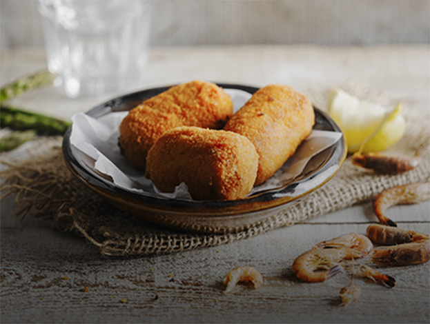
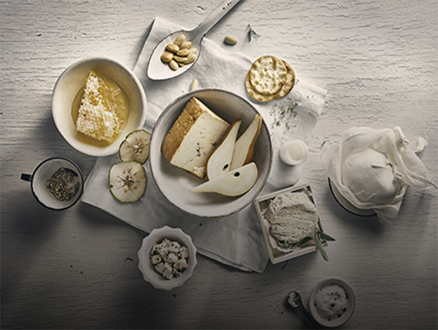
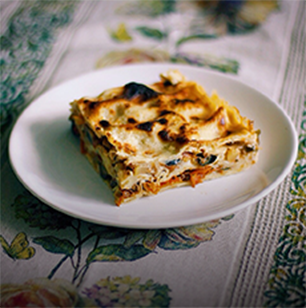
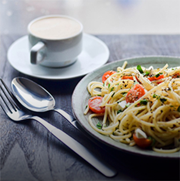
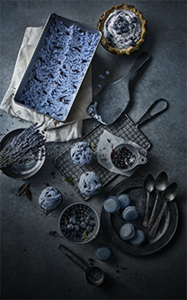
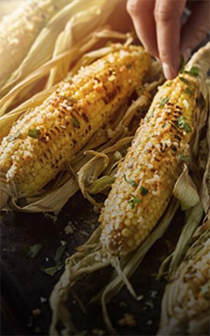
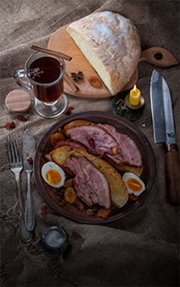
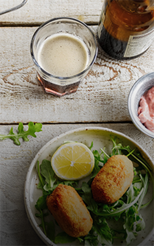

Подбор рецептов

Блюдо дня
Куриные ножки на гриле

Лучшие рецепты недели
7 Лучших рецептов недели
рецепты

Утиные ножки с овощами и грудинкой фасолью
говядина, масло топлёное, лук репчатый, морковь, редька, перец сладкий, помидоры, томат-пюре, картофель, чеснок, бульон мясной, соль, перец чёрный, зелень петрушки...

Салат из свеклы с козьим сыром и медовой заправкой
говядина, масло топлёное, лук репчатый, морковь, редька, перец сладкий, помидоры, томат-пюре, картофель
#Горячаяподборка

Утренние рецепты

Масленица

Рецепты для детей
